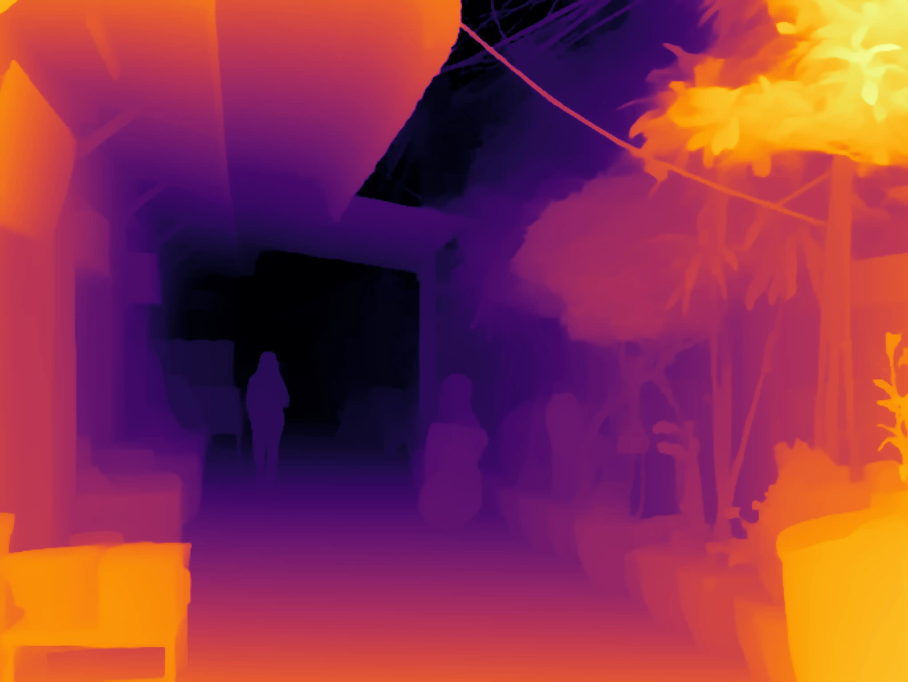

Bangkok In Depth Images (Depth Anything v2)
Images of day-to-day scenes from Bangkok. First displayed as an AI-generated depth map, then as an image
when you click it or hit the space bar.
You can use the arrow keys on your keyboard to switch between the images.
- What patterns do you see?
- How is the world different if you only have depth available?

Asia In Depth Images (Depth Anything v1)
The depth maps in this slideshow are from Depth Anything Version 1 and are therefore far less detailled than in Version 2.

Asia In Depth Videos (with sound)
Videos converted to depth maps with the sound track still available.